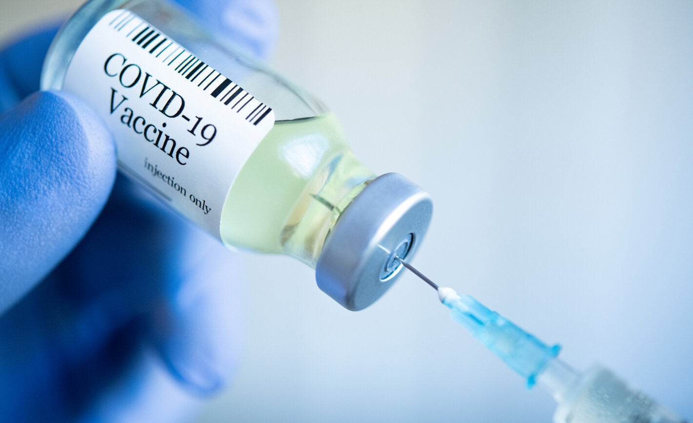

How to Prevent?

If you are fully vaccinated, you can resume activities that you did prior to the pandemic.
The best way to prevent illness is to avoid being exposed to this virus.
Learn how COVID-19 spreads and practice these actions to help prevent the spread of this illness.
To help prevent the spread of COVID-19:
1) Wear a mask to protect yourself and others and stop the spread of COVID-19.
2) Stay at least 6 feet (about 2 arm lengths) from others who don’t live with you.
3) Avoid crowds and poorly ventilated spaces. The more people you are in contact with, the more likely you are to be exposed to COVID-19.
4) Get a COVID-19 vaccine when it’s available to you.
5) Clean your hands often, either with soap and water for 20 seconds or a hand sanitizer that contains at least 60% alcohol.
6) Avoid close contact with people who are sick.
7) Cover your cough or sneeze with a tissue, then throw the tissue in the trash.
8) Clean frequently touched objects and surfaces daily. If someone is sick or has tested positive for COVID-19, disinfect frequently touched surfaces.
9) Monitor your health daily.
For informational purposes only. Consult your local medical authority for advice.